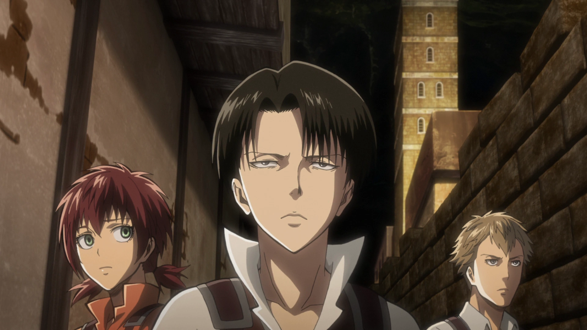

| Title | No Regrets — Part 1 |
|---|---|
| Main Character | Levi Ackerman |
| Type | OVA / Spin-off |
| Release Date | December 9, 2014 |
| Duration | Approximately 25 minutes |
| Studio | Wit Studio |
No Regrets — Part 1 introduces Levi Ackerman and his life in the Underground, where he survives alongside his close friends Furlan Church and Isabel Magnolia.
The three make a living by using their skills with the vertical maneuvering equipment while trying to avoid the authorities. Levi's exceptional abilities eventually attract the attention of Erwin Smith.
Erwin offers Levi and his friends a chance to leave the Underground and join the Survey Corps. However, their new opportunity is connected to a secret mission that will change their lives.